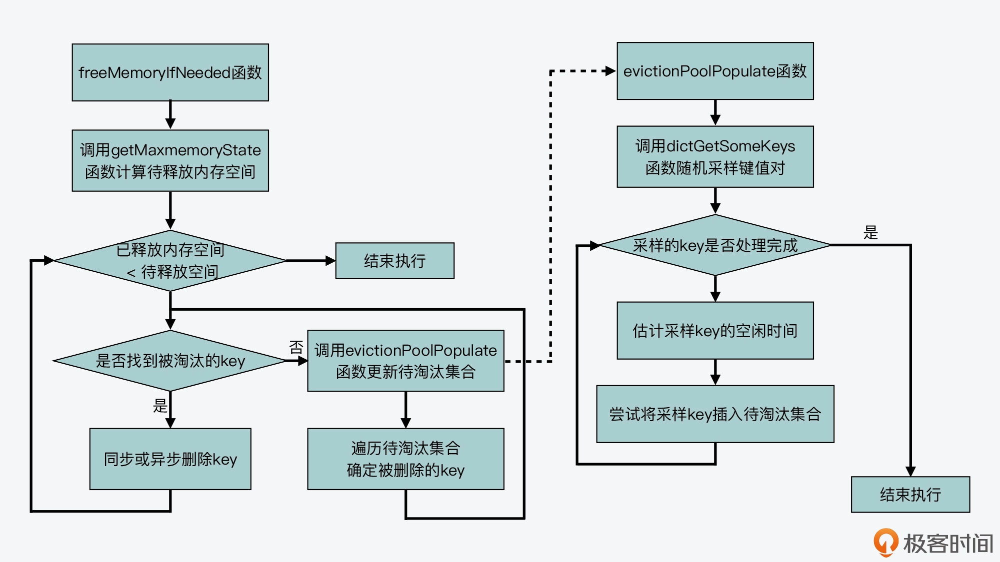

- 00 开篇词 阅读Redis源码能给你带来什么？.md
- 01 带你快速攻略Redis源码的整体架构.md
- 02 键值对中字符串的实现，用char还是结构体？.md
- 03 如何实现一个性能优异的Hash表？.md
- 04 内存友好的数据结构该如何细化设计？.md
- 05 有序集合为何能同时支持点查询和范围查询？.md
- 06 从ziplist到quicklist，再到listpack的启发.md
- 07 为什么Stream使用了Radix Tree？.md
- 08 Redis server启动后会做哪些操作？.md
- 09 Redis事件驱动框架（上）：何时使用select、poll、epoll？.md
- 10 Redis事件驱动框架（中）：Redis实现了Reactor模型吗？.md
- 11 Redis事件驱动框架（下）：Redis有哪些事件？.md
- 12 Redis真的是单线程吗？.md
- 13 Redis 6.0多IO线程的效率提高了吗？.md
- 14 从代码实现看分布式锁的原子性保证.md
- 15 为什么LRU算法原理和代码实现不一样？.md
- 16 LFU算法和其他算法相比有优势吗？.md
- 17 Lazy Free会影响缓存替换吗？.md
- 18 如何生成和解读RDB文件？.md
- 19 AOF重写（上）：触发时机与重写的影响.md
- 20 AOF重写（下）：重写时的新写操作记录在哪里？.md
- 21 主从复制：基于状态机的设计与实现.md
- 22 哨兵也和Redis实例一样初始化吗？.md
- 23 从哨兵Leader选举学习Raft协议实现（上）.md
- 24 从哨兵Leader选举学习Raft协议实现（下）.md
- 25 PubSub在主从故障切换时是如何发挥作用的？.md
- 26 从Ping-Pong消息学习Gossip协议的实现.md
- 27 从MOVED、ASK看集群节点如何处理命令？.md
- 28 Redis Cluster数据迁移会阻塞吗？.md
- 29 如何正确实现循环缓冲区？.md
- 30 如何在系统中实现延迟监控？.md
- 31 从Module的实现学习动态扩展功能.md
- 32 如何在一个系统中实现单元测试？.md
- 结束语 Redis源码阅读，让我们从新开始.md
15 为什么LRU算法原理和代码实现不一样？
从这节课开始，我们就进入了课程的第三个模块：缓存模块。在接下来的三节课当中，我会给你详细介绍 LRU、LFU 算法在 Redis 源码中的实现，以及 Redis 惰性删除对缓存的影响。
学习这部分内容，一方面可以让你掌握这些经典缓存算法在一个实际系统中该如何设计和实现；另一方面，你也可以学习到在计算机系统设计实现中的一个重要原则，也就是在进行系统设计开发的过程中，需要均衡算法复杂度和实现复杂度。另外，你还可以学习到缓存替换、惰性删除是如何释放 Redis 内存的。内存资源对 Redis 来说是非常宝贵的，所以掌握了这一点，你就可以有效减少 Redis 的内存使用问题了。
好，那么今天这节课呢，我们就先来学习下 LRU 算法在 Redis 中的实现。
LRU 算法的基本原理
首先，我们需要理解 LRU 算法的基本原理。LRU 算法就是指最近最少使用（Least Recently Used，LRU）算法，这是一个经典的缓存算法。
从基本原理上来说，LRU 算法会使用一个链表来维护缓存中每一个数据的访问情况，并根据数据的实时访问，调整数据在链表中的位置，然后通过数据在链表中的位置，来表示数据是最近刚访问的，还是已经有一段时间没有访问了。
而具体来说，LRU 算法会把链表的头部和尾部分别设置为 MRU 端和 LRU 端。其中，MRU 是 Most Recently Used 的缩写，MRU 端表示这里的数据是刚被访问的。而 LRU 端则表示，这里的数据是最近最少访问的数据。
我在第一季课程中曾介绍过LRU 算法的执行过程，这里，我们来简要回顾下。LRU 算法的执行，可以分成三种情况来掌握。
- 情况一：当有新数据插入时，LRU 算法会把该数据插入到链表头部，同时把原来链表头部的数据及其之后的数据，都向尾部移动一位。
- 情况二：当有数据刚被访问了一次之后，LRU 算法就会把该数据从它在链表中的当前位置，移动到链表头部。同时，把从链表头部到它当前位置的其他数据，都向尾部移动一位。
- 情况三：当链表长度无法再容纳更多数据时，若再有新数据插入，LRU 算法就会去除链表尾部的数据，这也相当于将数据从缓存中淘汰掉。
下图就展示了 LRU 算法执行过程的第二种情况，你可以看下。其中，链表长度为 5，从链表头部到尾部保存的数据分别是 5，33，9，10，8。假设数据 9 被访问了一次，那么 9 就会被移动到链表头部，同时，数据 5 和 33 都要向链表尾部移动一位。

所以你其实可以发现，如果要严格按照 LRU 算法的基本原理来实现的话，你需要在代码中实现如下内容：
- 要为 Redis 使用最大内存时，可容纳的所有数据维护一个链表；
- 每当有新数据插入或是现有数据被再次访问时，需要执行多次链表操作。
而假设 Redis 保存的数据比较多的话，那么，这两部分的代码实现，就既需要额外的内存空间来保存链表，还会在访问数据的过程中，让 Redis 受到数据移动和链表操作的开销影响，从而就会降低 Redis 访问性能。
所以说，无论是为了节省宝贵的内存空间，还是为了保持 Redis 高性能，Redis 源码并没有严格按照 LRU 算法基本原理来实现它，而是提供了一个近似 LRU 算法的实现。
那么接下来，我们就来了解下这种近似 LRU 算法究竟是如何实现的。
Redis 中近似 LRU 算法的实现
不过，在了解 Redis 对近似 LRU 算法的实现之前，我们需要先来看下，Redis 的内存淘汰机制是如何启用近似 LRU 算法的，这可以帮助我们了解和近似 LRU 算法相关的配置项。
实际上，这和 Redis 配置文件 redis.conf 中的两个配置参数有关：
- maxmemory，该配置项设定了 Redis server 可以使用的最大内存容量，一旦 server 使用的实际内存量超出该阈值时，server 就会根据 maxmemory-policy 配置项定义的策略，执行内存淘汰操作；
- maxmemory-policy，该配置项设定了 Redis server 的内存淘汰策略，主要包括近似 LRU 算法、LFU 算法、按 TTL 值淘汰和随机淘汰等几种算法。
所以，一旦我们设定了 maxmemory 选项，并且将 maxmemory-policy 配置为 allkeys-lru 或是 volatile-lru 时，近似 LRU 算法就被启用了。这里，你需要注意的是，allkeys-lru 和 volatile-lru 都会使用近似 LRU 算法来淘汰数据，它们的区别在于：采用 allkeys-lru 策略淘汰数据时，它是在所有的键值对中筛选将被淘汰的数据；而采用 volatile-lru 策略淘汰数据时，它是在设置了过期时间的键值对中筛选将被淘汰的数据。
好，了解了如何启用近似 LRU 算法后，我们就来具体学习下 Redis 是如何实现近似 LRU 算法的。这里，为了便于你理解，我把 Redis 对近似 LRU 算法的实现分成了三个部分。
- 全局 LRU 时钟值的计算：这部分包括，Redis 源码为了实现近似 LRU 算法的效果，是如何计算全局 LRU 时钟值的，以用来判断数据访问的时效性；
- 键值对 LRU 时钟值的初始化与更新：这部分包括，Redis 源码在哪些函数中对每个键值对对应的 LRU 时钟值，进行初始化与更新；
- 近似 LRU 算法的实际执行：这部分包括，Redis 源码具体如何执行近似 LRU 算法，也就是何时触发数据淘汰，以及实际淘汰的机制是怎么实现的。
那么下面，我们就先来看下全局 LRU 时钟值的计算。
全局 LRU 时钟值的计算
虽然 Redis 使用了近似 LRU 算法，但是，这个算法仍然需要区分不同数据的访问时效性，也就是说，Redis 需要知道数据的最近一次访问时间。因此，Redis 就设计了 LRU 时钟来记录数据每次访问的时间戳。
我们在【第 4 讲】中已经了解到，Redis 在源码中对于每个键值对中的值，会使用一个 redisObject 结构体来保存指向值的指针。那么，redisObject 结构体除了记录值的指针以外，它其实还会使用 24 bits 来保存 LRU 时钟信息，对应的是 lru 成员变量。所以这样一来，每个键值对都会把它最近一次被访问的时间戳，记录在 lru 变量当中。
redisOjbect 结构体的定义是在server.h中，其中就包含了 lru 成员变量的定义，你可以看下。
typedef struct redisObject {
unsigned type:4;
unsigned encoding:4;
unsigned lru:LRU_BITS; //记录LRU信息，宏定义LRU_BITS是24 bits
int refcount;
void *ptr;
} robj;
**那么，每个键值对的 LRU 时钟值具体是如何计算的呢？**其实，Redis server 使用了一个实例级别的全局 LRU 时钟，每个键值对的 LRU 时钟值会根据全局 LRU 时钟进行设置。
这个全局 LRU 时钟保存在了 Redis 全局变量 server 的成员变量 lruclock 中。当 Redis server 启动后，调用 initServerConfig 函数初始化各项参数时，就会对这个全局 LRU 时钟 lruclock 进行设置。具体来说，initServerConfig 函数是调用 getLRUClock 函数，来设置 lruclock 的值，如下所示：
void initServerConfig(void) {
...
unsigned int lruclock = getLRUClock(); //调用getLRUClock函数计算全局LRU时钟值
atomicSet(server.lruclock,lruclock);//设置lruclock为刚计算的LRU时钟值
...
}
所以，全局 LRU 时钟值就是通过 getLRUClock 函数计算得到的。
getLRUClock 函数是在evict.c文件中实现的，它会调用 mstime 函数（在server.c文件中）获得以毫秒为单位计算的 UNIX 时间戳，然后将这个 UNIX 时间戳除以宏定义 LRU_CLOCK_RESOLUTION。宏定义 LRU_CLOCK_RESOLUTION 是在 server.h 文件中定义的，它表示的是以毫秒为单位的 LRU 时钟精度，也就是以毫秒为单位来表示的 LRU 时钟最小单位。
因为 LRU_CLOCK_RESOLUTION 的默认值是 1000，所以，LRU 时钟精度就是 1000 毫秒，也就是 1 秒。
这样一来，你需要注意的就是，如果一个数据前后两次访问的时间间隔小于 1 秒，那么这两次访问的时间戳就是一样的。因为 LRU 时钟的精度就是 1 秒，它无法区分间隔小于 1 秒的不同时间戳。
好了，了解了宏定义 LRU_CLOCK_RESOLUTION 的含义之后，我们再来看下 getLRUClock 函数中的计算。
首先，getLRUClock 函数将获得的 UNIX 时间戳，除以 LRU_CLOCK_RESOLUTION 后，就得到了以 LRU 时钟精度来计算的 UNIX 时间戳，也就是当前的 LRU 时钟值。
紧接着，getLRUClock 函数会把 LRU 时钟值和宏定义 LRU_CLOCK_MAX 做与运算，其中宏定义 LRU_CLOCK_MAX 表示的是 LRU 时钟能表示的最大值。
以下代码就展示了刚才介绍到的宏定义，以及 getLRUClock 函数的执行逻辑，你可以看下。
#define LRU_BITS 24
#define LRU_CLOCK_MAX ((1<<LRU_BITS)-1) //LRU时钟的最大值
#define LRU_CLOCK_RESOLUTION 1000 //以毫秒为单位的LRU时钟精度
unsigned int getLRUClock(void) {
return (mstime()/LRU_CLOCK_RESOLUTION) & LRU_CLOCK_MAX;
}
所以现在，你就知道了在默认情况下，全局 LRU 时钟值是以 1 秒为精度来计算的 UNIX 时间戳，并且它是在 initServerConfig 函数中进行了初始化。那么接下来，你可能还会困惑的问题是：在 Redis server 的运行过程中，全局 LRU 时钟值是如何更新的呢？
这就和 Redis server 在事件驱动框架中，定期运行的时间事件所对应的 serverCron 函数有关了。
serverCron 函数作为时间事件的回调函数，本身会按照一定的频率周期性执行，其频率值是由 Redis 配置文件 redis.conf 中的 hz 配置项决定的。hz 配置项的默认值是 10，这表示 serverCron 函数会每 100 毫秒（1 秒 /10 = 100 毫秒）运行一次。
这样，在 serverCron 函数中，全局 LRU 时钟值就会按照这个函数的执行频率，定期调用 getLRUClock 函数进行更新，如下所示：
int serverCron(struct aeEventLoop *eventLoop, long long id, void *clientData) {
...
unsigned long lruclock = getLRUClock(); //默认情况下，每100毫秒调用getLRUClock函数更新一次全局LRU时钟值
atomicSet(server.lruclock,lruclock); //设置lruclock变量
...
}
所以这样一来，每个键值对就可以从全局 LRU 时钟获取最新的访问时间戳了。
好，那么接下来，我们就来了解下，对于每个键值对来说，它对应的 redisObject 结构体中的 lru 变量，是在哪些函数中进行初始化和更新的。
键值对 LRU 时钟值的初始化与更新
首先，对于一个键值对来说，它的 LRU 时钟值最初是在这个键值对被创建的时候，进行初始化设置的，这个初始化操作是在 createObject 函数中调用的。createObject 函数实现在object.c文件当中，当 Redis 要创建一个键值对时，就会调用这个函数。
而 createObject 函数除了会给 redisObject 结构体分配内存空间之外，它还会根据我刚才提到的 maxmemory_policy 配置项的值，来初始化设置 redisObject 结构体中的 lru 变量。
具体来说，就是如果 maxmemory_policy 配置为使用 LFU 策略，那么 lru 变量值会被初始化设置为 LFU 算法的计算值（关于 LFU 算法的代码实现，我会在下节课给你介绍）。而如果 maxmemory_policy 配置项没有使用 LFU 策略，那么，createObject 函数就会调用 LRU_CLOCK 函数来设置 lru 变量的值，也就是键值对对应的 LRU 时钟值。
LRU_CLOCK 函数是在 evict.c 文件中实现的，它的作用就是返回当前的全局 LRU 时钟值。因为一个键值对一旦被创建，也就相当于有了一次访问，所以它对应的 LRU 时钟值就表示了它的访问时间戳。
以下代码展示了这部分的执行逻辑，你可以看下。
robj *createObject(int type, void *ptr) {
robj *o = zmalloc(sizeof(*o));
...
//如果缓存替换策略是LFU，那么将lru变量设置为LFU的计数值
if (server.maxmemory_policy & MAXMEMORY_FLAG_LFU) {
o->lru = (LFUGetTimeInMinutes()<<8) | LFU_INIT_VAL;
} else {
o->lru = LRU_CLOCK(); //否则，调用LRU_CLOCK函数获取LRU时钟值
}
return o;
}
那么到这里，又出现了一个新的问题：一个键值对的 LRU 时钟值又是在什么时候被再次更新的呢？
其实，只要一个键值对被访问了，它的 LRU 时钟值就会被更新。而当一个键值对被访问时，访问操作最终都会调用 lookupKey 函数。
lookupKey 函数是在db.c文件中实现的，它会从全局哈希表中查找要访问的键值对。如果该键值对存在，那么 lookupKey 函数就会根据 maxmemory_policy 的配置值，来更新键值对的 LRU 时钟值，也就是它的访问时间戳。
而当 maxmemory_policy 没有配置为 LFU 策略时，lookupKey 函数就会调用 LRU_CLOCK 函数，来获取当前的全局 LRU 时钟值，并将其赋值给键值对的 redisObject 结构体中的 lru 变量，如下所示：
robj *lookupKey(redisDb *db, robj *key, int flags) {
dictEntry *de = dictFind(db->dict,key->ptr); //查找键值对
if (de) {
robj *val = dictGetVal(de); 获取键值对对应的redisObject结构体
...
if (server.maxmemory_policy & MAXMEMORY_FLAG_LFU) {
updateLFU(val); //如果使用了LFU策略，更新LFU计数值
} else {
val->lru = LRU_CLOCK(); //否则，调用LRU_CLOCK函数获取全局LRU时钟值
}
...
}}
这样一来，每个键值对一旦被访问，就能获得最新的访问时间戳了。不过现在，你可能要问了：这些访问时间戳最终是如何被用于近似 LRU 算法，来进行数据淘汰的呢？
接下来，我们就来学习下近似 LRU 算法的实际执行过程。
近似 LRU 算法的实际执行
现在我们已经知道，Redis 之所以实现近似 LRU 算法的目的，是为了减少内存资源和操作时间上的开销。那么在这里，我们其实可以从两个方面来了解近似 LRU 算法的执行过程，分别是：
- 何时触发算法执行？
- 算法具体如何执行？
何时触发算法执行？
首先，近似 LRU 算法的主要逻辑是在 freeMemoryIfNeeded 函数中实现的，而这个函数本身是在 evict.c 文件中实现。
freeMemoryIfNeeded 函数是被 freeMemoryIfNeededAndSafe 函数（在 evict.c 文件中）调用，而 freeMemoryIfNeededAndSafe 函数又是被 processCommand 函数所调用的。你可以参考下面的图，展示了这三者的调用关系。

所以，我们看到 processCommand 函数，就应该知道这个函数是 Redis 处理每个命令时都会被调用的。我在【第 14 讲】中已经介绍过 processCommand 函数，你可以再去回顾下。
那么，processCommand 函数在执行的时候，实际上会根据两个条件来判断是否调用 freeMemoryIfNeededAndSafe 函数。
- 条件一：设置了 maxmemory 配置项为非 0 值。
- 条件二：Lua 脚本没有在超时运行。
如果这两个条件成立，那么 processCommand 函数就会调用 freeMemoryIfNeededAndSafe 函数，如下所示：
if (server.maxmemory && !server.lua_timedout) {
int out_of_memory = freeMemoryIfNeededAndSafe() == C_ERR;
...
然后，freeMemoryIfNeededAndSafe 函数还会再次根据两个条件，来判断是否调用 freeMemoryIfNeeded 函数。
- 条件一：Lua 脚本在超时运行。
- 条件二：Redis server 正在加载数据。
也就是说，只有在这两个条件都不成立的情况下，freeMemoryIfNeeded 函数才会被调用。下面的代码展示了 freeMemoryIfNeededAndSafe 函数的执行逻辑，你可以看下。
int freeMemoryIfNeededAndSafe(void) {
if (server.lua_timedout || server.loading) return C_OK;
return freeMemoryIfNeeded();
}
这样，一旦 freeMemoryIfNeeded 函数被调用了，并且 maxmemory-policy 被设置为了 allkeys-lru 或 volatile-lru，那么近似 LRU 算法就开始被触发执行了。接下来，我们就来看下近似 LRU 算法具体是如何执行的，也就是来了解 freeMemoryIfNeeded 函数的主要执行流程。
近似 LRU 算法具体如何执行？
近似 LRU 算法的执行可以分成三大步骤，分别是判断当前内存使用情况、更新待淘汰的候选键值对集合、选择被淘汰的键值对并删除。下面我们就依次来看下。
- 判断当前内存使用情况
首先，freeMemoryIfNeeded 函数会调用 getMaxmemoryState 函数，评估当前的内存使用情况。getMaxmemoryState 函数是在 evict.c 文件中实现的，它会判断当前 Redis server 使用的内存容量是否超过了 maxmemory 配置的值。
如果当前内存使用量没有超过 maxmemory，那么，getMaxmemoryState 函数会返回 C_OK，紧接着，freeMemoryIfNeeded 函数也会直接返回了。
int freeMemoryIfNeeded(void) {
...
if (getMaxmemoryState(&mem_reported,NULL,&mem_tofree,NULL) == C_OK)
return C_OK;
...
}
这里，你需要注意的是，getMaxmemoryState 函数在评估当前内存使用情况的时候，如果发现已用内存超出了 maxmemory，它就会计算需要释放的内存量。这个释放的内存大小等于已使用的内存量减去 maxmemory。不过，已使用的内存量并不包括用于主从复制的复制缓冲区大小，这是 getMaxmemoryState 函数，通过调用 freeMemoryGetNotCountedMemory 函数来计算的。
我把 getMaxmemoryState 函数的基本执行逻辑代码放在这里，你可以看下。
int getMaxmemoryState(size_t *total, size_t *logical, size_t *tofree, float *level) {
...
mem_reported = zmalloc_used_memory(); //计算已使用的内存量
...
//将用于主从复制的复制缓冲区大小从已使用内存量中扣除
mem_used = mem_reported;
size_t overhead = freeMemoryGetNotCountedMemory();
mem_used = (mem_used > overhead) ? mem_used-overhead : 0;
...
//计算需要释放的内存量
mem_tofree = mem_used - server.maxmemory;
...
}
而如果当前 server 使用的内存量，的确已经超出 maxmemory 的上限了，那么 freeMemoryIfNeeded 函数就会执行一个 while 循环，来淘汰数据释放内存。
其实，为了淘汰数据，Redis 定义了一个数组 EvictionPoolLRU，用来保存待淘汰的候选键值对。这个数组的元素类型是 evictionPoolEntry 结构体，该结构体保存了待淘汰键值对的空闲时间 idle、对应的 key 等信息。以下代码展示了 EvictionPoolLRU 数组和 evictionPoolEntry 结构体，它们都是在 evict.c 文件中定义的。
static struct evictionPoolEntry *EvictionPoolLRU;
struct evictionPoolEntry {
unsigned long long idle; //待淘汰的键值对的空闲时间
sds key; //待淘汰的键值对的key
sds cached; //缓存的SDS对象
int dbid; //待淘汰键值对的key所在的数据库ID
};
这样，Redis server 在执行 initSever 函数进行初始化时，会调用 evictionPoolAlloc 函数（在 evict.c 文件中）为 EvictionPoolLRU 数组分配内存空间，该数组的大小由宏定义 EVPOOL_SIZE（在 evict.c 文件中）决定，默认是 16 个元素，也就是可以保存 16 个待淘汰的候选键值对。
那么，freeMemoryIfNeeded 函数在淘汰数据的循环流程中，就会更新这个待淘汰的候选键值对集合，也就是 EvictionPoolLRU 数组。下面我就来给你具体介绍一下。
- 更新待淘汰的候选键值对集合
首先，freeMemoryIfNeeded 函数会调用 evictionPoolPopulate 函数（在 evict.c 文件中），而 evictionPoolPopulate 函数会先调用 dictGetSomeKeys 函数（在 dict.c 文件中），从待采样的哈希表中随机获取一定数量的 key。不过，这里还有两个地方你需要注意下。
第一点，dictGetSomeKeys 函数采样的哈希表，是由 maxmemory_policy 配置项来决定的。如果 maxmemory_policy 配置的是 allkeys_lru，那么待采样哈希表就是 Redis server 的全局哈希表，也就是在所有键值对中进行采样；否则，待采样哈希表就是保存着设置了过期时间的 key 的哈希表。
以下代码是 freeMemoryIfNeeded 函数中对 evictionPoolPopulate 函数的调用过程，你可以看下。
for (i = 0; i < server.dbnum; i++) {
db = server.db+i; //对Redis server上的每一个数据库都执行
//根据淘汰策略，决定使用全局哈希表还是设置了过期时间的key的哈希表
dict = (server.maxmemory_policy & MAXMEMORY_FLAG_ALLKEYS) ? db->dict : db->expires;
if ((keys = dictSize(dict)) != 0) {
//将选择的哈希表dict传入evictionPoolPopulate函数，同时将全局哈希表也传给evictionPoolPopulate函数
evictionPoolPopulate(i, dict, db->dict, pool);
total_keys += keys;
}
}
第二点，dictGetSomeKeys 函数采样的 key 的数量，是由 redis.conf 中的配置项 maxmemory-samples 决定的，该配置项的默认值是 5。下面代码就展示了 evictionPoolPopulate 函数对 dictGetSomeKeys 函数的调用：
void evictionPoolPopulate(int dbid, dict *sampledict, dict *keydict, struct evictionPoolEntry *pool) {
...
dictEntry *samples[server.maxmemory_samples]; //采样后的集合，大小为maxmemory_samples
//将待采样的哈希表sampledict、采样后的集合samples、以及采样数量maxmemory_samples，作为参数传给dictGetSomeKeys
count = dictGetSomeKeys(sampledict,samples,server.maxmemory_samples);
...
}
如此一来，dictGetSomeKeys 函数就能返回采样的键值对集合了。然后，evictionPoolPopulate 函数会根据实际采样到的键值对数量 count，执行一个循环。
在这个循环流程中，evictionPoolPopulate 函数会调用 estimateObjectIdleTime 函数，来计算在采样集合中的每一个键值对的空闲时间，如下所示：
for (j = 0; j < count; j++) {
...
if (server.maxmemory_policy & MAXMEMORY_FLAG_LRU) {
idle = estimateObjectIdleTime(o);
}
...
紧接着，evictionPoolPopulate 函数会遍历待淘汰的候选键值对集合，也就是 EvictionPoolLRU 数组。在遍历过程中，它会尝试把采样的每一个键值对插入 EvictionPoolLRU 数组，这主要取决于以下两个条件之一：
- 一是，它能在数组中找到一个尚未插入键值对的空位；
- 二是，它能在数组中找到一个空闲时间小于采样键值对空闲时间的键值对。
这两个条件有一个成立的话，evictionPoolPopulate 函数就可以把采样键值对插入 EvictionPoolLRU 数组。等所有采样键值对都处理完后，evictionPoolPopulate 函数就完成对待淘汰候选键值对集合的更新了。
接下来，freeMemoryIfNeeded 函数，就可以开始选择最终被淘汰的键值对了。
- 选择被淘汰的键值对并删除
因为 evictionPoolPopulate 函数已经更新了 EvictionPoolLRU 数组，而且这个数组里面的 key，是按照空闲时间从小到大排好序了。所以，freeMemoryIfNeeded 函数会遍历一次 EvictionPoolLRU 数组，从数组的最后一个 key 开始选择，如果选到的 key 不是空值，那么就把它作为最终淘汰的 key。
这个过程的基本执行逻辑如下所示：
for (k = EVPOOL_SIZE-1; k >= 0; k--) { //从数组最后一个key开始查找
if (pool[k].key == NULL) continue; //当前key为空值，则查找下一个key
... //从全局哈希表或是expire哈希表中，获取当前key对应的键值对；并将当前key从EvictionPoolLRU数组删除
//如果当前key对应的键值对不为空，选择当前key为被淘汰的key
if (de) {
bestkey = dictGetKey(de);
break;
} else {} //否则，继续查找下个key
}
最后，一旦选到了被淘汰的 key，freeMemoryIfNeeded 函数就会根据 Redis server 的惰性删除配置，来执行同步删除或异步删除，如下所示：
if (bestkey) {
db = server.db+bestdbid;
robj *keyobj = createStringObject(bestkey,sdslen(bestkey)); //将删除key的信息传递给从库和AOF文件
propagateExpire(db,keyobj,server.lazyfree_lazy_eviction);
//如果配置了惰性删除，则进行异步删除
if (server.lazyfree_lazy_eviction)
dbAsyncDelete(db,keyobj);
else //否则进行同步删除
dbSyncDelete(db,keyobj);
}
好了，到这里，freeMemoryIfNeeded 函数就淘汰了一个 key。而如果此时，释放的内存空间还不够，也就是说没有达到我前面介绍的待释放空间，那么 freeMemoryIfNeeded 函数还会重复执行前面所说的更新待淘汰候选键值对集合、选择最终淘汰 key 的过程，直到满足待释放空间的大小要求。
下图就展示了 freeMemoryIfNeeded 函数涉及的基本流程，你可以再来整体回顾下。

其实，从刚才介绍的内容中，你就可以看到，近似 LRU 算法并没有使用耗时耗空间的链表，而是使用了固定大小的待淘汰数据集合，每次随机选择一些 key 加入待淘汰数据集合中。最后，再按照待淘汰集合中 key 的空闲时间长度，删除空闲时间最长的 key。这样一来，Redis 就近似实现了 LRU 算法的效果了。
小结
好了，今天这节课就到这里，我们来总结下。
今天这节课我给你介绍了 Redis 中，是如何实现 LRU 算法来进行缓存数据替换的。其中，我们根据 LRU 算法的基本原理，可以发现如果严格按照原理来实现 LRU 算法，那么开发的系统就需要用额外的内存空间来保存 LRU 链表，而且系统运行时也会受到 LRU 链表操作的开销影响。
而对于 Redis 来说，内存资源和性能都很重要，所以 Redis 实现了近似 LRU 算法。而为了实现近似 LRU 算法，Redis 首先是设置了全局 LRU 时钟，并在键值对创建时获取全局 LRU 时钟值作为访问时间戳，以及在每次访问时获取全局 LRU 时钟值，更新访问时间戳。
然后，当 Redis 每处理一个命令时，都会调用 freeMemoryIfNeeded 函数来判断是否需要释放内存。如果已使用内存超出了 maxmemory，那么，近似 LRU 算法就会随机选择一些键值对，组成待淘汰候选集合，并根据它们的访问时间戳，选出最旧的数据，将其淘汰。
实际上，通过学习这节课的内容，你可以体会到一个算法的基本原理和算法的实际执行，在系统开发中会有一定的折中选择，主要就是因为我们需要综合考虑所开发的系统，在资源和性能方面的要求，以避免严格按照算法实现带来的资源和性能开销。因此，这一点就是你在进行计算机系统开发时，要秉承的一个原则。
每课一问
现在你已经知道，Redis 源码中提供了 getLRUClock 函数来计算全局 LRU 时钟值，同时键值对的 LRU 时钟值是通过 LRU_CLOCK 函数来获取的，以下代码就展示了 LRU_CLOCK 函数的执行逻辑。这个函数包括两个分支，一个分支是直接从全局变量 server 的 lruclock 中获取全局时钟值，另一个是调用 getLRUClock 函数获取全局时钟值。
那么你知道，为什么键值对的 LRU 时钟值，不是直接通过调用 getLRUClock 函数来获取的呢？
unsigned int LRU_CLOCK(void) {
unsigned int lruclock;
if (1000/server.hz <= LRU_CLOCK_RESOLUTION) {
atomicGet(server.lruclock,lruclock);
} else {
lruclock = getLRUClock();
}
return lruclock;
}
欢迎在留言区分享你的答案和思考过程，如果觉得有收获，也欢迎你把今天的内容分享给更多的朋友。
© 2019 - 2023 Liangliang Lee. Powered by Vert.x and hexo-theme-book.